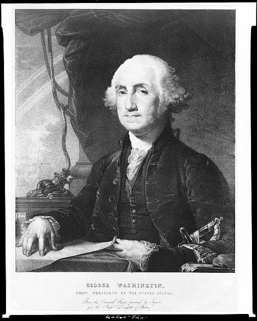
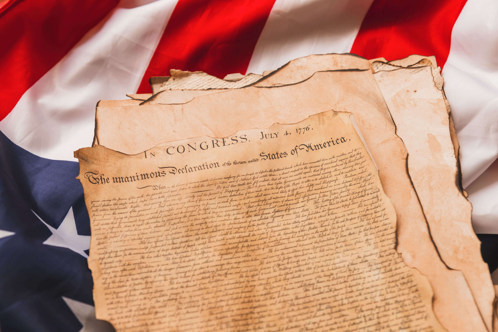

George Washington
George Washington was born in 1732 in the British colony of
Virginia. He was the oldest of 5 siblings. Their family owned a
wealthy tobacco plantation and their power rose locally. As a
plantation owner he was not happy about the increase in taxes by the
British, and believed it was time for the colonies to declare
independence. He is counted as one among the founding fathers, and
signed the declaration of independence. Washington married Martha
Custis in 1759, a widowed wife of Daniel Custis, a wealthy
plantation owner. He became one of the wealthiest men in the state
of Virginia at the time. With that, his increase in politics and
social standings gained momentum. He died 3 years after retiring
from presidency in 1799.

Revolutionary War
The British parliament was passing various Acts during the years
before the war broke out. These Acts limited colonial business,
increased taxes, and restricted the moving of further west. George
Washington, being an infuluential and powerful business owner was
outraged by the acts. He staged multiple protests and encouraged the
boycotting of British goods. The war broke out soon after in 1775.
During the revolutionary war he was the commander in chief of the
continental army. Washington's tactics were based on harassing the
British rather than face them in open combat, unless necessary. Even
though Washington did not have a lot of experience managing a large
number of troops, he proved to be a resilient and very capable
leader during the revolution. Even though he lost more battles than
he won, he employed winning strategies that won him a few battles.
